“尖端科学对宇宙源起的追寻”
与“佛说世界之初先成虚空与静生虚空”
冯冯
慈忍 / 誊录
当代的尖端太空科学与尖端物理学，已经从精明仪器观测与高能实验室的实验，把宇宙的膨胀发展历史倒卷，一直追溯回到源头，证实了宇宙是从一点空虚发生大爆炸膨胀而形成了这物质宇宙的，时间大约是一百五十亿年之前。大爆炸的炸射物质，不断旋转，不断冷却，凝结而成星云星体行星等等。(请参阅拙着“太空科学核子物理学与佛理的印证”一书，以观详论──天华公司出版)
“大爆炸学说”已经为大多数科学家所公认为迄今最合理而且有科学证据的宇宙形成学说。佛经中对宇宙的形成过程，也有不少说明，认为是从空生有，从有转空，空有循环不绝，而且亦提到过大爆炸，这些颇与当代尖端科学符合。(详见上述拙着)
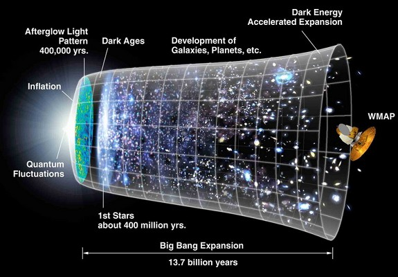
现在又有更多的科学家又提出了那不知天高地厚的问题：“宇宙大爆炸之前，是什么情况？”还有：“怎么样会从空无一物的空虚引发大爆炸而成为有物的物质宇宙？”“大爆炸的极高温度极高密度，又从何来？”
佛经楞严经卷四载有富楼那尊者向世尊请问：“世尊，……云何忽生山河大地诸有为相？次第迁流，终而复始？……”富楼那尊者与两千五百多年前所提出的问题，和今天尖端科学家所提出的疑问，是相近性质的，这里暂时不提世尊的答覆，且先看看当今尖端科学家的意见如何。
当今尖端科学家与宇宙学家等，都指出宇宙是无始无终的，而且是不断地变动的，他们称此种变动为“伸缩振摆”(Oscillating)，宇宙这一次从空生有的大爆炸，只不过是无数次数的大爆炸膨胀与收缩过程之一：换言之，宇宙是不断地生灭循环的。
这些尖端科学家们的发现，不是正好符合世尊常说的“世界生灭相续无始无终”吗？不是正好符合佛说的世界成住坏空循环不绝吗？(详见上述拙着)
现在尖端科学界们最急于要证知的就是宇宙在今次大爆炸膨胀之前的状况如何？科学家们已经知道，大爆炸膨胀到了一个临界密度之后，就会因内部的质量吸引力不断相互吸引而停止膨胀，进而开始收缩，把一切的星云漩系都收缩起来，全部压缩成为一团火球，又最后缩成一“点”，回到空无一物的状况。
然后，这一“点”空，又再发生大爆炸，向各方向膨胀，喷射出物质，形成许多新的星云漩系，这一次的形成的新宇宙，会比上一次的宇宙膨胀得更大，(见图解)时间也更长久！
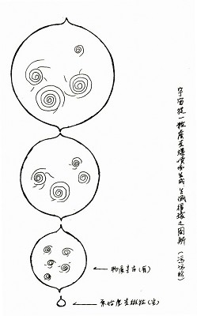宇宙从一粒虚空爆破而生成 生灭循环之图解(冯冯绘)
根据这些科学发现，就不难逆估宇宙前身是比较体积较今为小，时间持续亦较短。如果计算得出宇宙今生与前生的时空差异系数，就可以一路追溯下去，计出前二生，前三生，前四生以至前若干生的宇宙前身的时空大小和久暂的数字──佛经所谓“前三三”，就是指宇宙前生前身，在数学上来说，应该是可以追溯到宇宙最原始起源的零点。换言之，宇宙的已往多生历史，在感觉上固然是无限大，在数学上却不是！
那么，又产生了新的疑问：在那最初最原始的零点宇宙之前，又是什么情况呢？
英国剑桥大学的著名数学家泰斗与物理学家史蒂汾·赫京博士(Dr. Stephen Hawking)说：“这种问题，就像是问地球以北的北极在何处”。
我们的宇宙，其实并不是独一无二的宇宙，这一点在佛经内常常提到。拙着各文也多次引述这些佛经的记载。当代尖端科学也发现了除我们的宇宙，还有无数的宇宙，这些众多的宇宙都是从“空”(Void)，突然喷发爆炸而成的，这些所谓“空”，其实并非绝对的虚无的空，而是最最高度极少的物理的基本 。
(英文原文：Empty space is not empty, it is the seat of most violent physics──Nobel Laureates John A. Wheeler)
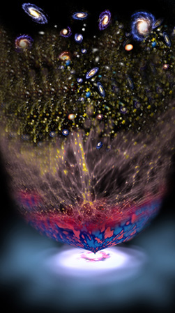这些尖端科学的发现，相当近似佛学所说的“空非顽空”与“空非无”，也可见佛学讲“空”，都是根据无限众多宇宙的物理法则，并非仅是一种人文学的概念或者心理上的感觉。
在西方现代科学中，爱因斯坦是一个宇宙学先躯，他指出宇宙的质量吸引力(Gravity)，物质密度，均与宇宙的时空弧线(Space time Curvature)有关。物质密度的大小会影响时空胀缩，假如宇宙内的物质太少，那它们之间的相互质量吸引力就小，太少物质，太少吸引力，就无法拉作彼此，无法控制时空的膨胀伸缩，以致宇宙时空永远一路膨胀伸展下去，没有止境。这就成为所谓“开放宇宙”，时间与空间永远不会再相合，用图解来表示，时间与空间的座标，是V形的，(交叉的)，从始点出发之后，就永远不重逢。(请参看内明杂志第184、185、186期拙作)
宇宙内物质多，密度大，则有足够的相互吸引力来使各团星云漩系向外伸展的速度渐渐慢下来，然后，吸引力又把它们向内拉，这样宇宙时空是圆形的──所谓封闭的宇宙，有点像地球形状，这样的球形“封闭宇宙”是没有边界尽头的，谁要是乘太空船沿着一条直线方向以起光速飞行，飞入太空深处，经过相当漫长的时间旅程之后，还是会回到出发点原处！
宇宙学家们用仪器计算出我们的宇宙物质密度，是在百分之五左右，还未到达临界密度(百分之十)，不过，这是就能够观测得到的宇宙范畴而测得的数字。事实上，宇宙内的物质密度，未必就是均匀等称的，也许在另一角落的物质密度更大或较小，现在的观测，碰到宇宙地平线问题，也许将来，科学更进步，可以超越地平线去观测，才可确知物质密度的精确数。不过，当代科学界们，从红内线与无线电波观测可及的观测宇宙范畴内的氦气，判断出可能还有更大密度的物质存在于整个宇宙之内，也许十倍于已知的密度，那么，就是说，我们的宇宙，虽然仍然在扩张着，但也快接近了临界密度了，换言之，我们的宇宙也快要收缩成为一个封闭的球形宇宙。
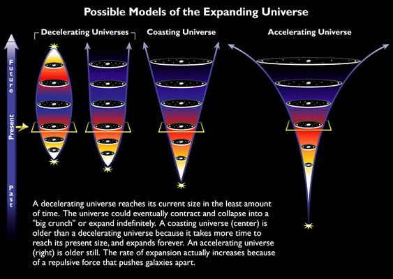
是什么原因使到宇宙发生这种先膨胀后收缩的情况呢？美国纽约市恒特学院的物理学家爱德华·蔡安(Prof. Edward Tryon, Hunter College),早于一九六0年末期在哥伦比亚大学担任助教之时，就主张宇宙是真空伸缩振动级(Vacuum Fluctuational)， 他认为宇宙是从空无一物猝然地爆发成为物质宇宙的。当年，这位年轻的物理学家的惊人之论，很叫老前辈们瞪眼，可是到了现在八0年代末期，越来越多的太空发现证实了他确有先见之明，而且，也证明了佛经说的“空生万法”与“先成虚空”更是先进的宇宙观！
蔡安博士最近在他的著作“星期四的宇宙”(Thursday's Universe)一书内 (网注：此书作者为Marcia Bartusiak)，这样说：“我们从爱因斯坦的著名方程式E=MC2得知，物质是能的一种形相。我们的宇宙内充满巨量的物质，但是也有一种很重要的能，那是与物质的能相抗相抵的，称之为吸引力潜能吧(Gravitational Potential Energy)，这是无形的，存在于每一星云，每一星球，行星，乃至于气体。一种吸引力是正的，而另一种同时并存的吸引力是负的，有正吸引力，就必有负吸引力。而所谓负吸引力就是使宇宙的一切相互吸引力平衡的力量，我们的宇宙内，由于有这两种一正一负的吸引力相互抵销，所以，整个宇宙的能，实际上是”零“(Zero)。他认为这是宇宙保持临界密度边缘趋向封闭的原因，而且，保存了物质与能的平衡。
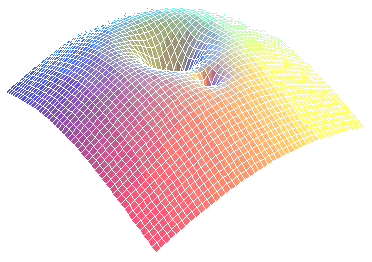蔡安博士的理论“宇宙能量等于零”，和我们宇宙内的“物质不灭”(物质保存)律，颇为配合。举例说：我们太空中每有一个负荷正电粒子之波，就会有一个能量相等的负荷负电的粒子之波来相对之，正负电相抵销而成为零，在北方太空每有一团远离我们而去的星云漩系，那么，在南方的太空，也必有一团相对等量的星云漩系与之作相对的竞赛奔驰，这样一来，就互相抵消了动能，成为“零”！
宇宙内什么都有正负相对的对方，这其实也不算是很新的发现，早在蔡氏之前，也有不少科学家这样说过的，不过，蔡氏提出了正负两种吸引力，充实了这种观念。我十年前在“反物质”一文中，也曾提及过，有一正物质，必有一负物质，又有两反物质的相对，想来当然是难以置信，试想，这里有一个正物质的冯冯，在宇宙什么深处，又有一个负物质的冯冯，另外还有两个冯冯的反物质冯冯，一正一负，光一个冯冯，就已经猴得叫人受不了啦！但愿这四个冯冯都别相遇在一起！
华严经说“世界之初，先成虚空，次成色界”，又说到“空生万法”──从一点空虚生成物质宇宙，这当然不是未学过科学的人所可立刻接受的。“若说万法都从空生，那么，洋房汽车黄金美钞为什么不突然从虚空生成呢？”有人这样说：“要是那样突然生出来给我，我才信。”
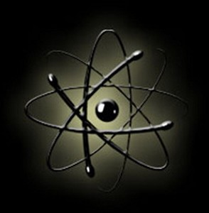洋房汽车不会突然从空生成，黄金也不会这样容易出现来满足贪欲！但是，倘若洋房汽车黄金的最基本粒子，在宇宙中，却是和任何粒子一样会突然从虚空中生成的！粒子物理学的现象，与分子物理学不同，次原子以下的极微粒子的行为，完全不能用古典的十九世纪及以前的物理学定律法则来解释！举例说，古典的物理学法则认为质子或中子不可能有足够的能力脱离核子!但是，今日的放射物理学就发现有些质子与中子常常脱离核子，像电子一般自由。
著名的德国物理学家海辛堡（Dr. Werner Heisenberg），早于一九二七年就发表了他震撼物理学界的“量子力学说”，其中有一条法则就是“测不准法则”（又称无常法则），（详见以前“内明”多期发表的拙文及天华公司出版前文提及拙着），海辛堡氏注意到次原子的世界，那些显微镜也看不见地极微极微世界里，能的波是随时变幻无常的，不是可以用一般物理法则解释的。举例说，在次原子世界里，一个电子波，与其相对的反物质“反电子”波（Positron）,也许会突然从虚空中出现，不知来自何处？来时也毫无征兆，忽然又两者会合，突然消失无踪，一生一灭，前后只有千万份之一秒钟！
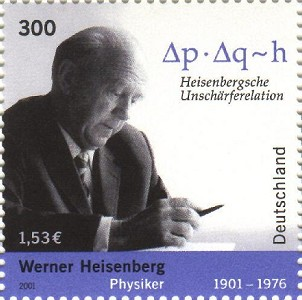 海辛堡 Werner Heisenberg
这情形并非徒然是理论或推测：这是业经高能物理实验室所做的多次实验所证实了的；这种自然的从虚空突然生成物质的现象，忽生忽灭，至今仍是物理学家们无法解释的。佛经倒是时常提及从空生有的自然现象。所以次原子世界的忽然从空生有，忽然从有化空，这些现象，使物理学家们对于“空”的涵义有了新的认识，那就是空并非“无”，也不是“顽空”，这也是佛经里常说的。佛经说的“空”，原来与宇宙物理暗合，不能说佛说空义仅是哲学意味，也不能说仅是为了修行寻求性空而设的抽象观念，反过来说，性空观念是抽象的，但是，它与宇宙物理相通，是以宇宙法则作为基础的。学人尽在文字相上钻牛角尖，许多人说了写了一辈子的性空，也还只是做文字游戏而已，摸不清什么是性空。如果了解宇宙物理这一点，或者就会较为容易接近佛说性空吧？
我这样说，是指的性空原是以宇宙法则的空为物理基础，性空原是宇宙真理。但我并非意指性空就等于是物理学上的空，不过，倘若修行到心性湛空，识念就获得自由，成为超识，可与宇宙极微相通化合，进入涅槃，而不受形而下的物质限制拘束生死轮回。智慧本来是难以用言语传递的，无论怎样解说，恐怕也不能适切传达。而愚者一得，也未必能为方家所接受的吧？悟与不悟，那也只能视缘而定了。有些“佛教无上至尊”的大家大师们，或者仍然坚持佛理超越一切甚至于超越科学家发现的宇宙真理，这种我执与法执是可敬佩的，但我却不敢苟同人类的思维可以超越宇宙真理法则。我认为是相通或者符合而已。“我执”与“法执”有时也是绊脚石啊！
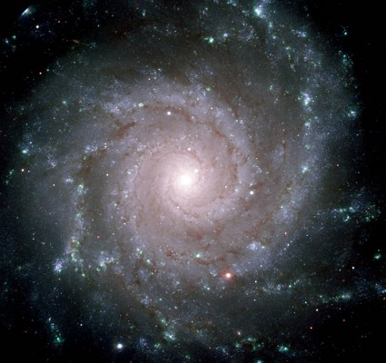洛克菲勒大学的物理学家海兹?裴高士（Dr. Heinz Pagels, Rockefeller University）有一个很好的譬喻。他说：“你乘喷射客机飞越大洋，洋面看来很平静，空无一物。但是，你在海洋泛舟，就会知道，海洋原来是汹涛处处，水中有血有生物，仰望太空亦看来是空无一物的，实际上，假若你能接近观看，就会发现，无数的量子粒子经常在进进出出在有与无之间。
粒子这种极短暂的空有变化，随生随灭，即灭即生，被物理学家称之为“真空伸缩振动”（Vacuum Fluctuation）。以古典物理学旧知来看，是难以相信的，物质怎可以忽生忽灭又忽空忽有？但是，这却是粒子物理与光子物理的常情！“量子学说”的法则，说明了粒子物理的量子现象！著名的量子力物理学家约翰?威勒博士（Dr. John A. Wheeler）说：“再没有比这更确实的了，所谓的空虚，其实并非虚无的！‘空’其实是最强力的物理根源！”
这不是正符合佛经的“空生万法”吗？佛教内涵深邃的哲学理论与宇宙物理科学的真知层面，以哲学思想及科学思维从人生本位去证求宇宙及人生真理，可惜世人大多数缺乏先进科学知识，因而忽略了佛经内的科学层面，转而偏重认为哲学层面的研究，未免轻彼而重此。也未免有一些“瞎子摸象”！虽知人生哲学是脱离不了宇宙科学基础的。哲学以思想推论人生，科学则以研究实验求证宇宙，两者实为不可分离的佛学支柱，相互支持，轻科学而独尊哲学，或轻哲学而独尊科学，都不是完整的求知。更不是佛学的原意。
楞严经内载：“佛陀指出物理世界的形成，是由于本体功能动力所产生，能与量的互变，构成了器世界的客体存在，但是，真如本体也仍是假名而已，它从身心的实验去证明物理世界的原理，从物理世界的范围，指出身心解脱实验的理论和方法。现代科学理论，大体都与它互相吻合。”这一段是著名佛学大家南怀谨教授在其名著“楞严大义今释”中序文的一段真知灼见名言。
我们且再看看西方尖端科学家们还有什么新发现。
根据海辛堡博士“量子力学说”内的“测不准定律”（无常定律）的发现，“能”与“时间”的关系是成反比的。自然的爆发成物的“能”越少，则其时间越为持久。
蔡安博士认为：假若我们的宇宙的能量是零，也许我们的宇宙就是存在于一个更为庞大得多的超级大宇宙之内的无数宇宙泡泡之一，各宇宙都分别地从空虚的一点酝酿爆发从空生有成为物质宇宙，历时不知多少亿兆年代！蔡安博士推论称，在这超级大宇宙之内，对能有1087个粒子或光子，正在从一点一粒爆发成为物质宇宙。
我以前在多篇拙文中也提出过类似这样的见解，我是从佛经的开示，加上个人的观察与深入超时空而获得宇宙是超宇宙的一个小泡泡，超宇宙之上，还有超超级宇宙，还有无穷尽的超超超级宇宙，与相互交错交织的复杂多元宇宙，有无数的复度时空。
两千五六百年前，佛陀讲楞严经时，就开示在我们的宇宙内，时间有三位，空间有十位！现代尖端科学已证实的空间已有十一度空间，已知的是十四度空间。在不懂科学的人看来，佛经的时空观念无疑就是神话了，他们自然也不知道科学的发现越来越接近佛理！
超级大宇宙内的无数空虚微粒，就象是美国黄石公园的温泉泥淖或是台北新北投温泉泥潭内的小气泡，永远不停的想在泥潭中冒出来，到处都是这些啵啵喷冒的小气泡微粒，升起及爆炸。不过，温泉泥潭的气泡冒起后是与空气结合，超级大宇宙内的空虚微粒，冒起之后，有些成功地爆炸成为物质宇宙不断膨胀，直到膨胀到达极点，内部的质量吸引力又使它们收缩成为“空”的一点微粒，然后又作新的爆炸成为新的宇宙，如此生灭不绝地循环下去。这是我从佛经的启示及从自己的观察而得的概念。
我的愚见，数年来曾屡次发表。不料竟也不约而同地接近最新宇宙学的新发现。愚见既与上述的科学家发现接近，也颇似物理家古斯(Dr. Alan Guth)的学说，古斯是美国麻省理工学院的著名粒子物理学家。他在一九八七年的第十三届宇宙物理学会议上对来自全世界二十四个国家的物理学家七百多人发表宇宙形成新发现及理论。
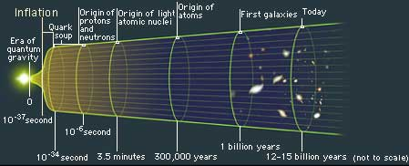
古斯博士认为：我们的宇宙之初是从大约九千公克的质量膨胀到现在的，形成过程持续不到一秒钟。它的均匀，是因为宇宙的膨胀速度高于光速一百倍，宇宙至今已存在了大约两百亿“地球年”，可能仍会持续数十亿年至一百亿年。宇宙在“形成之前”的情形，古斯在论文中指出是微细的空虚泡泡，在10-35秒之时，宇宙只有一个质子那么大，它开始从极高热冷却至1027°F(华氏)以下，然后，在10-32秒之时，就膨胀到成为可观察的宇宙，其时的体积大约相当于一个网球，质量大约是九千公克。然后突然的爆喷出高热物质与能──那些粒子与辐射旋转及冷却成为现在的宇宙内的星云漩系的物体。
不过，宇宙学家们与物理学家们，仍然存在疑问：“那最初最初的泡泡小粒根源又是怎么来的呢？”
一九七六年才从苏联移民到美国的著名物理学家亚历山大·威连坚博士(Dr. Alexander Vilenkin)──现任教于塔虎脱大学(Tufts University)，他对于这一问题的答案是很大胆的：“时间与空间的宇宙是从虚无一物的虚空产生的！”
威连坚博士说：“所谓空无一物，就是既无时间又无空间的一个空泡！”
上文说过，华严经早在两千五百多年前就说过世界之初，先成虚空，次成无色界，后次成色界。
威勒博士曾经指出宇宙中的粒子活动是由于极微的量子机械力学作用，(详见上述拙作各篇，此处不赘)。他说，观察极微到1033公分的物质，就可以发现量子机械力学作用了。而且会发现空间是不断地猛烈地伸缩波动。粒子可以自由地出现于空间又可以自然地消失。随时从空生有，从“有”化“空”。威勒博士的观念中的宇宙胚形泡泡仍是物质的。
威连坚博士的新发现，比威勒博士更进一步，威连坚博士发现在超级大宇宙中，有很多极微极微的非物质的泡泡，但这些都是水珠形的极微的封闭泡泡，如果要量它们，它们的直径是小于亿兆分之一的公分的。(事实上它们根本空无一物，不可测量，这里的数字，只是比喻！)，这些极微的空虚小粒，生生灭灭，绝大多数仍是从空虚归于空虚，但是有若干小粒会爆喷成物质的宇宙泡泡，产生了时间与空间。威连坚博士说空虚是不稳定的。
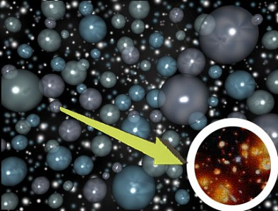普林斯顿大学的太空物理学家理察·哥特(Dr. Richard Cott, Princeton University)的理论，亦与我的发现相近。哥特博士说，我们的宇宙其实是居住在一个无比巨大的超级大宇宙内的一员，那超级大宇宙也在不断的膨胀它的时空。(关于拙论，详见上述拙着各篇，此处不赘)。哥特说超级大宇宙内的温度很高，可能高达1031度，它的密度也很高，而且非常不稳定。而这个超级大宇宙之中，到处有空虚的泡泡小粒，不断地在冒现，就像滚滚开水锅中冒出的气泡。这些小泡泡就是各别的胚形宇宙，其中很多重归于虚空，又很多爆炸成为物质宇宙，我们的宇宙就是其中之一。我以前发表的拙见，竟然或多或少契合哥特博士等科学家的发现！但不能说我是有任何先见，真正有先见真知的是佛陀和诸菩萨。我只不过是从佛经中得到一些皮毛！我在以前发表的拙文中常提到，宇宙之上，还有更大的超级大宇宙，后者之上，也还有更大更大的超级大宇宙……而且，是没有极限的！是永恒的，无涯的！我们的宇宙，在无限的超级超级超超级大宇宙之内，渺小的就像沧海之一粟！大球内有小球无数，小球内还有更小球无数，更小球内还有更小的。从极大到极微，都是无止境无极限的，佛经中，尤以华严经说得最多这种观察！可惜龙树菩萨当年只取得下卷华严经，如他取得上卷与中卷，还不知蕴藏多少更伟大深邃的宇宙真理开示给我们呢！
从空无一物形成有物的宇宙，这一点是科学公认的了，但是上文提及的尖端科学家门，都不能回答的问题就是：
“当初的虚空，又是从何而来的呢？”
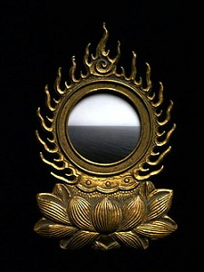两千五百多年前，富楼那尊者就曾经以此恭询佛陀。楞严经卷四载云：
富楼那从座起，偏袒右肩，右膝着地，合掌恭敬而白佛言：“大威德世尊，事为众生数演如来第一义谛……今闻如来微妙法音，尚行疑悔，世尊！若复世间根尘阴处等界，皆如来藏清净本然，云何忽生山河大地诸有为相？次第迁流，然而复始……”
佛陀回答：“富楼那，如汝所言，清净本然，云何忽生山河大地？汝常不闻如来宣说，性觉妙明，本觉明妙。”
富楼那说：“唯然，世尊，我常闻佛宣说斯义。”
佛陀说：“汝称觉明，为复性明，称名为觉。为觉不明，称为明觉。”
富楼那说：“若此不明，名为觉者，则须所明。”
佛言：“若无所明，则无明觉，有所非觉。无所非明，无明又非，觉湛明性，性觉必明。妄为明觉，觉非所明，因明立所，所既妄立，生汝妄证。无同异中，炽然成异，异彼所异，因异立同，同异发明，因此复立无同无异，如是拨乱，相待生劳，劳久发尘，自相浑浊，由是引起尘带烦恼，起为世界！静成虚空！虚空为同，世界为异。彼无同异，真有为法。觉明空昧，相待成摇，故有风轮，执持世界，因空生摇，坚明立碍，彼金岦者，觉明立坚，故有金轮保持国土，坚觉岦成，摇明风出，风金相摩，故有火光为变化性。岦明生润，故有水轮含十方界，火腾水降，充发立坚，湿为巨海，干为州潬，以是义故，彼大海中火光常起，彼州漳中江河常注，水势劣火，结数高山，是故山石，击则成焰，融则成水，土势劣水，抽为草木，是故林薮，遇烧成土，因绞成水，交妄发生，递相为种，以是因缘，世界相续！”( 此段是佛陀解释形而上的体性发生形而下物质器世间的情形。)
佛陀回答的一段，已经很明白的开示宇宙如何发生万有。最令我感动与赞叹的是佛说“静生虚空”这一句。我认为佛陀此语已经答覆了上述各尖端科学家所未能回答的问题！
“静生虚空”！这是虚空宇宙发生之前的前身状况！
原载香港《内明》第191期：1988年2月1日